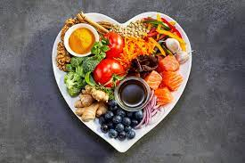
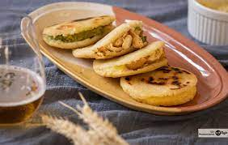
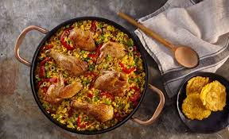
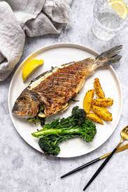

Recipes of all kinds
Recipe ideas
Life is full of good things and in this case it could be eating, so you could take a few recipes to start your adventure in the culinary world,
or just do it for fun, regardless of the reason, I hope we can help you progress with some cuisines like others. Not much, we assume you are
interested so stay until the end regardless of the failed attempts.

-
homemade arepas
-
Material list
- White pre-cooked corn flour ....... 180 g
- Cold water ....... 300 ml
- Grated cheese for the filling ....... 90 g
- Cooked chicken breast for filling ...... 1
- Small avocado for the filling

-
Cooking time
- Total time:32 minutes
- Preparation:20 minutes
- Cooking time: 12 m
- Rest: 15 m
- The first thing we must make is the dough, so we will mix the corn flour, water and salt and make a ball when it is very homogeneous,
letting it rest in the refrigerator for 15 minutes, wrapped in transparent film.
After that time we make six equal sized balls, work them with our hands and flatten them delicately.
Once ready, we cook them in a non-stick pan, with olive oil for about six minutes on each side at a medium-low temperature.
When the arepas are ready, we make a cut in one of the sides and fill it to taste with the mixture of ingredients: cheese, chicken and avocado mashed with a fork.
-
Chicken rice
-
Material list
- Chopped chicken ..... 250 g
- Bomb rice ...... 400 g
- Chicken broth ...... 1
- Cloves of garlic ...... 2
- Red pepper ....... 100 g
- Green pepper ...... 100 g
- Ripe tomato ...... 1
- Chorizo pepper pulp ....... 5 g
- White wine ...... 150ml
- salt an pepper
- extra virgin olive oil

- Season the chicken pieces with salt and pepper and sauté them in a 40 cm diameter paella pan with a generous splash of extra virgin olive oil.
We only want them to take color on the outside, so, as soon as they brown slightly, we remove them from the paella and set aside. Peel the garlic
cloves and chop them finely. We add a little more oil to the paella if we see it necessary and sauté them over low heat. Before they brown, add the
two types of pepper, cleaned and cut into small cubes, season with salt and pepper and continue sautéing for a couple of minutes. We wash the tomato
well, cut it in half and grate it. We add to the paella along with a tablespoon of chorizo pepper. We stir and sauté for a couple of minutes. Add the
white wine and let the alcohol evaporate before adding the rice and sauté, stirring constantly, for another minute. Finally, we add the chicken to
the paella along with three glasses of the chicken broth and increase the heat to maximum. We reserve the rest of the broth. We stir well to
distribute the chicken throughout the container and, when the broth starts to boil, we count three minutes. We test the salt level and adjust it if
necessary. After this time, we lower the heat and cook the rice with chicken for 15 minutes without touching the rice, stirring, or anything similar.
If the rice is dry of broth, we add the reserved one little by little, but it may not be necessary. After the cooking time has passed, remove the
paella from the heat, cover with a clean cloth and let it rest for five minutes before serving. For the rice with chicken to come out perfect, it is
important that the paella is of the indicated diameter and that the fire on which we cook it covers its entire base. If the fire is smaller than the
paella, only the center will be cooked and the rice on the sides will be raw. In this case, if you use a smaller paella that fits your plate or
burner, reduce the quantities of ingredients so that the rice is well spread over the base in a thin layer.
-
Grilled sea bream
-
Material list
- Portion of sea bream ..... 1
- Extra virgin olive oil
- Salt

- We have two options for this recipe and in both of them we are going to ensure that the skin does not stick to the pan. On the one hand, cooking the
sea bream open, which is the most practical way to secure the skin. In this case what we have to do is heat a little olive oil on the griddle, putting
some baking paper in the pan. Season the sea bream with salt and pepper, place it on the meat side when the pan is hot over medium heat and cook for
three minutes. We turn and cook for another three minutes. If what we have are clean sea bream fillets, the procedure changes slightly. Now we have to
put a little olive oil in the pan, over high heat, and when it is very hot we reduce the heat to medium and put the sea bream with the skin part in
the pan. We apply light pressure with our hand or put a weight so that the skin does not shrink and retract and we let it cook for three minutes.
After this time, we turn off the heat, turn the sea bream over and cook it with the residual heat for a minute on the meat side.
Continue looking here and you will see more about some diets